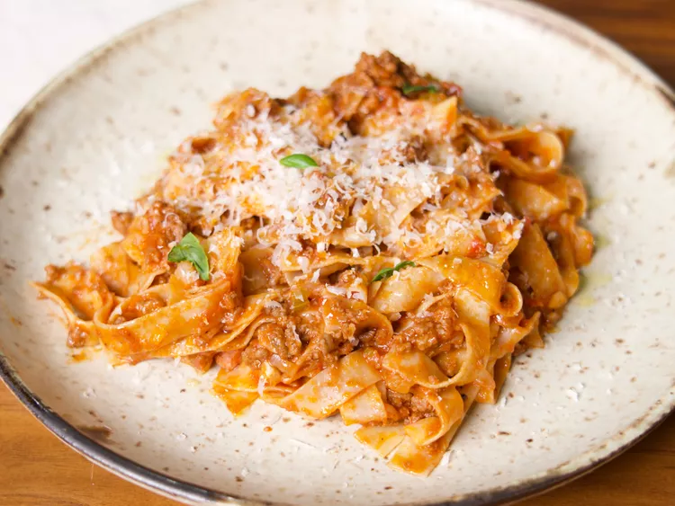

Home
One-pot pasta bolognese

Delicious pasta bolognese
On a hectic weeknight, nothing beats the convenience of a one-pot meal.
Ingredients
- 1 tablespoon olive oil
- 1 pound ground beef
- 1 onion, diced
- 1 carrot, diced
- 1 celery stalk, diced
- 2 tablespoons minced garlic
- 2 tablespoons chopped pancetta
- 3 tablespoons tomato paste
- 1 bay leaf
- 1 sprig thyme
- ¾ cup white wine
- 2 cups chicken or beef stock
- 1 28-ounce can crushed tomatoes
- ½ cup heavy cream
- 1 piece of parmesan rind
- Salt and pepper to taste
- 1 16-ounce package pappardelle or tagliatelle pasta noodles
- Freshly grated Parmesan cheese and fresh basil, for garnish
How to
- Turn on a multi-functional pressure cooker (such as Instant Pot®) and select the sauté function. Heat oil in the pot; add ground beef and season with salt and pepper, and stir to cook until browned and crumbly (5 to 7 minutes).
- Add onion, carrot, celery, garlic, and pancetta and stir, sautéing until the veggies are soft (8-10 minutes). Add tomato paste, bay leaf, thyme sprig, and white wine. Stir it all together, and allow the sauce to bubble and the alcohol to cook off for a minute or two.
- Add stock and cook, stirring occasionally, until slightly reduced, about 2 to 3 minutes. Add crushed tomatoes, heavy cream, and parmesan rind and stir until fully incorporated.
- Turn the appliance off sauté mode, then close and lock the lid. Select low pressure and set the timer for 4 minutes, allowing 10 to 15 minutes for pressure to build. When the timer is up, release the pressure carefully using the quick-release method according to the manufacturer's instructions, which will take about 5 minutes. Then, unlock and remove the lid.
- Turn the appliance back to sauté mode, add in the noodles, and stir them into the sauce, making sure they are fully submerged. Cook the noodles for about 5 minutes, or until they reach al dente (note: it will be about half the time as stated on the box).
- Once the noodles are cooked, plate up a portion with a hefty helping of grated parmesan cheese, some torn basil leaves, and a drizzle of olive oil, and enjoy.